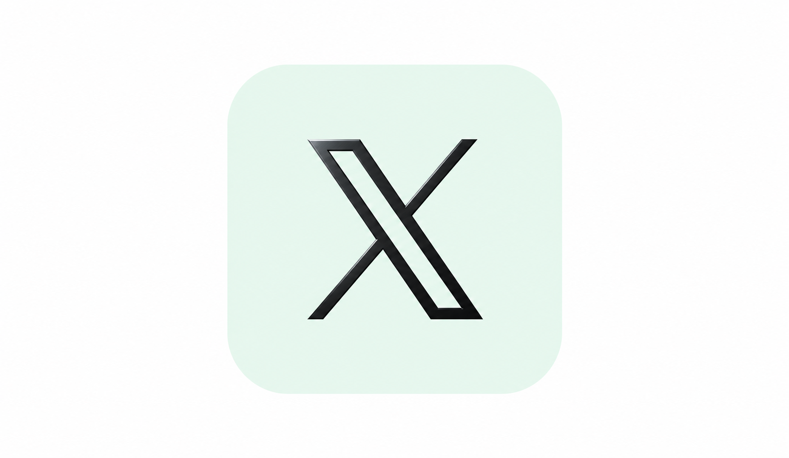
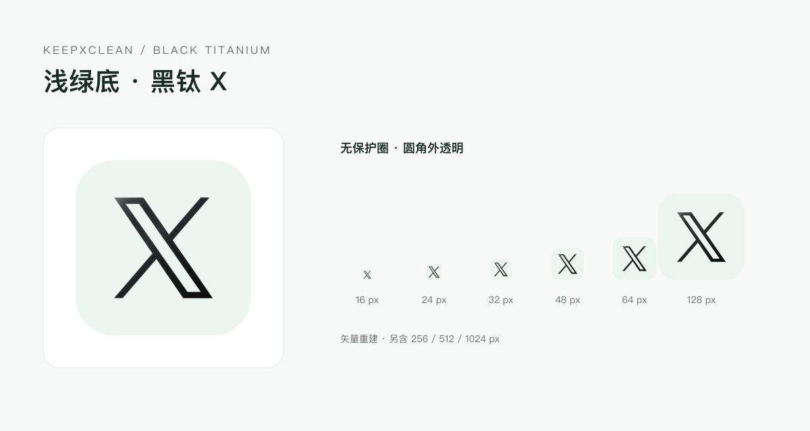

KEEPXCLEAN / SELECTED ICON
浅绿底 · 黑钛 X
当前采用无保护圈版本。浅绿纯色底，保留 X 原有轮廓与克制的金属边缘反光。
下载图标包
SVG 母版
尺寸与使用说明
浅色 UI 总览
选定的黑钛效果

内置 imagegen 原图 ·
生成提示词
各尺寸图标

包含 16、24、32、48、64、128、256、512、1024 px PNG，圆角外透明。SVG 是对选定质感的矢量重建，细微反射与生成原图有差异。